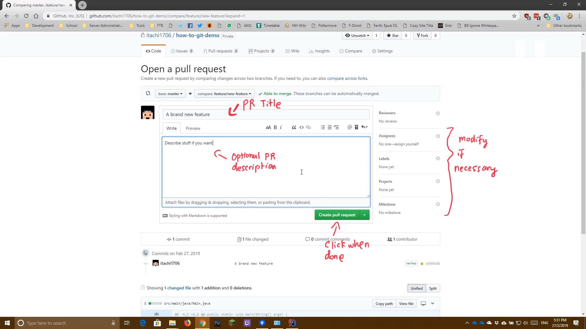

This will show you how to do git-flow style of committing. Ideal git guidelines is that we never commit anything to master directly. So instead, we make use
of branches where we will do our code/feature/implementation/whatever and then we will issue a Pull Request (PR) to commit said code back to master. This way we are able to do
extra validation on our code through code review by Continuous Integration (CI) servers or other collaborators. This will ensure that bad code will never be found on master
Note: Basically most of the features should follow this flow
(everything on a Pull Request). This way it will allow us to do our own
stuff simultaneously effectively
Click the Branch button to create a new branch
Enter your desired branch name (To sort the branch to folders, append / to the branch name)
You should be able to see your branch name highlighted in yellow, find your branch and select Compare and Pull Request
Note: If it does not show up, manually create the PR by going to the Pull Request tab and select "Create Pull Request", after which select your branch in the compare dropdown box
Enter your Pull Request Title and Descriptions accordingly if needed. Also modify the settings on the left if you need to do so
When you are done, create the PR by clicking the green Create Pull Request button

Now we play the waiting game until a green tick appears and it says All checks have passed (Note: If it fails, your code is not compiling and needs to be fixed)
If all checks have passed, either you or anyone else can go ahead and click the green Merge Pull Request button
Continue clicking Confirm merge here
When you are done you can switch back to the master branch (you may not delete the branch if needed)
Demo Video The following is a video on how this is being done. Read the how-to guide before watching the video for actual steps to do it
Console Commands Used
git checkout -b "branchname" # Checkouts a new branch
git add [-A] "file" # Adds file to Commit
git commit -m "Message" # Commits messages
git push # Push commits to GitHub
git checkout master # Go back to master
git branch -d "branchname" # Deletes the branch